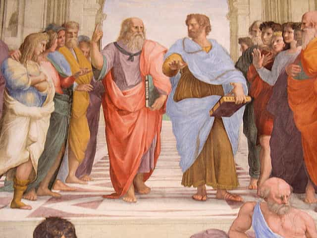

Seeing as about a month ago I wrote an article on the decline of fitness training as an organized discipline, and possible ways to redeem it, I started thinking about whether or not this process could be applied to the state of education as well—education being something that I think we all can agree sucks the big one. And much like fitness, modern education has a few deeply buried nuggets of ancient wisdom that can be dug up and polished and made to serve a new generation. But to see that, we must first look at ancient education:
The Ancients
Curiously, when I was reading Aristotle’s Rhetoric, I noticed that a lot of what he discusses was, in fact, very similar to a few things that I recall learning in elementary—the concept of the apparent enthymeme is almost identical to the “if-then” statement that most of us learned in elementary school… and that’s basically the full extent of the rhetorical training we received in our lives.
The first “educated” men were those who had to learn the needlessly complicated systems of writing that existed in the past, such as in Mesopotamia. Once writing was simplified enough for the masses, we see a sea-change in which it appears that the training of any “gentleman” in the past was to make him something of a polymath. For example, in the West, Greco-Roman education involved music, poetry, drama, history, wrestling, ethics, and rhetoric, as well as several different methods of pedagogy such as the famous Socratic method.

Similarly, in the East, Confucian scholars advocated the “Six Virtues” (ranging from archery to calligraphy) as the basis of any educated man’s curriculum, and broadly similar concepts existed in other places in the world as well. The point I’m making is that “mens sane corpore sano” was an ideal across the globe, and continued to be for centuries.
Naturally, from these ancient tomes came the various instances of rebirth of classical education in both East and West, allowing the concept of the well-rounded gentleman polymath to live on around the world for centuries.
Hell, a look at a modern school curriculum still asks you to fulfill all general requirements ranging from English to math to the sciences and many other subjects, so deep down, buried under the sands of time, the ideal is still there. But clearly, we’re not raising a generation of brilliant polymaths, so what the hell happened?
In the modern USA, a staggering amount of high school “Graduates” can’t read at a remedial level. Children in many countries, including but not limited to America, barely know anything about their own country’s history, let alone the histories of other countries. And as the steadily declining PISA scores show, the hard sciences like math aren’t doing so hot either.
We must ask, why is this happening? Every kid literally has the equivalent of the Library of Alexandria at his fingertips, and he chooses to not use it. Why?
Probably not reading Nietzsche
I worked as a teacher for three years, and my father has been one for most of his life (in fact he retired this year) and thus I like to think I have a fair amount of knowledge of the field—and I will tell you outright: I don’t know how to solve this problem. If I had a quick answer, I’d be a billionaire—and no, I’m not joking.
However, I do have a couple of suggestions as to how education (At least in the USA) can be made a little less crappy.
1. It’s not always the teacher’s fault
Teachers get a bum rap often in America; especially from the “fat cuckservative” faction of the Republican party, but from various other factions as well. And certainly some teachers are crappy—and not just the ones who bang their students.
But with that being said, it’s not always the teacher’s fault. This will upset parents who can’t possibly conceive of their precious little angels doing anything wrong. Many (not all, but many) kids are complete shitheads that make the school environment absolutely toxic. Whether its fighting, general fuckery, or just not paying attention, a school can overcome poverty and a lack of supplies, but it absolutely cannot overcome a shitty student body with no desire to learn. And frankly, it shouldn’t be the school’s responsibility to instill discipline. At the risk of sounding cliched; if cohesive families existed in the US, this wouldn’t be a problem.
2. Standardized testing and constant inspections from some ivory tower suit won’t solve anything
Vaguely related to the first issue, I find that a lot of school policies are made by people in the school board who more often than not have little, if any experience actually teaching in a classroom. But naturally they have to justify their massive salaries somehow (spoilers: their salaries are much greater than the actual teacher’s), which leads to the constant shuffling around of curricula and endless standardized testing and stupid shit like Student Growth Objectives that has been yet to be shown to achieve anything.
And really, that’s it. A simple problem to state but impossibly difficult to actually solve—I have seen many idealistic young teachers get chewed up and spit out by the school system and its students.
Conclusion
And all you’d have to do to do this is solve the crappy cultural climate; everything else would follow. You could engender a love of learning, you would see test scores go up, and more importantly, you would see people resembling those fabled polymaths of the past. But that is unfathomably easier said than done—and if you have kids that are beginning school, I’d recommend looking elsewhere beyond the public school system.
Read More: 5 Signs The American Education System Is Doomed